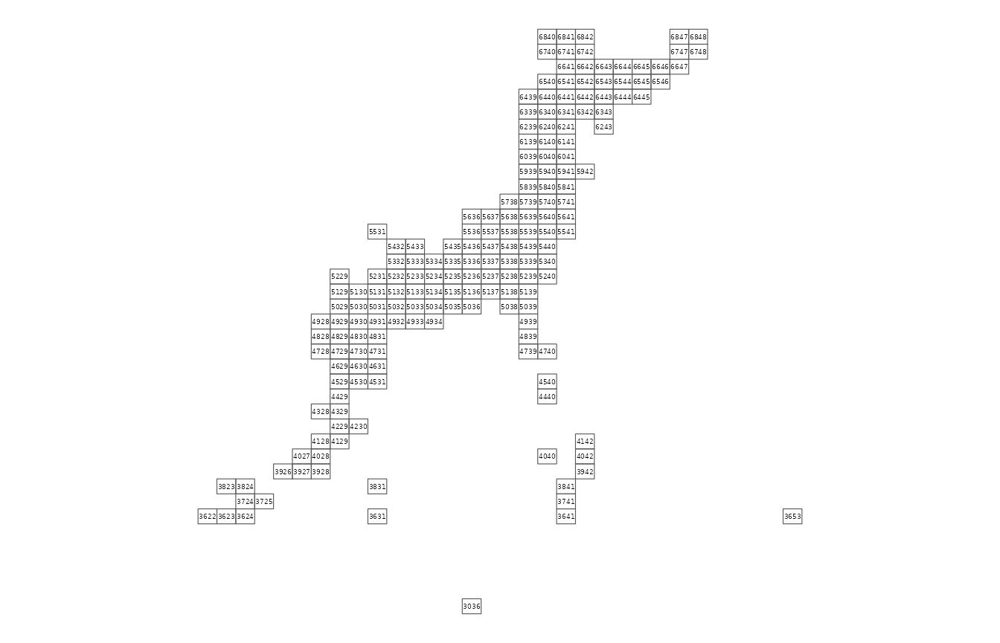

df_polys <-
meshcode_set(mesh_size = 80) %>%
jpmesh::export_meshes()
df_polys %>%
st_geometry() %>%
plot()
library(ggplot2)
ggplot() +
geom_sf(data = df_polys, fill = NA) +
geom_text(
data = cbind(
mesh = df_polys$meshcode,
df_polys$geometry %>%
st_centroid() %>%
st_coordinates() %>%
as.data.frame()
),
aes(X, Y, label = mesh),
size = 1.2
) +
coord_sf(datum = NA) +
theme_void()
wip…
sessionInfo()
#> R version 4.2.1 (2022-06-23)
#> Platform: x86_64-pc-linux-gnu (64-bit)
#> Running under: Ubuntu 20.04.4 LTS
#>
#> Matrix products: default
#> BLAS: /usr/lib/x86_64-linux-gnu/blas/libblas.so.3.9.0
#> LAPACK: /usr/lib/x86_64-linux-gnu/lapack/liblapack.so.3.9.0
#>
#> locale:
#> [1] LC_CTYPE=C.UTF-8 LC_NUMERIC=C LC_TIME=C.UTF-8
#> [4] LC_COLLATE=C.UTF-8 LC_MONETARY=C.UTF-8 LC_MESSAGES=C.UTF-8
#> [7] LC_PAPER=C.UTF-8 LC_NAME=C LC_ADDRESS=C
#> [10] LC_TELEPHONE=C LC_MEASUREMENT=C.UTF-8 LC_IDENTIFICATION=C
#>
#> attached base packages:
#> [1] stats graphics grDevices utils datasets methods base
#>
#> other attached packages:
#> [1] ggplot2_3.3.6 sf_1.0-8 jpmesh_2.1.0.9000
#>
#> loaded via a namespace (and not attached):
#> [1] Rcpp_1.0.9 class_7.3-20 rprojroot_2.0.3 digest_0.6.29
#> [5] utf8_1.2.2 mime_0.12 R6_2.5.1 evaluate_0.16
#> [9] e1071_1.7-11 highr_0.9 pillar_1.8.0 rlang_1.0.4
#> [13] miniUI_0.1.1.1 jquerylib_0.1.4 rmarkdown_2.14 pkgdown_2.0.6
#> [17] textshaping_0.3.6 desc_1.4.1 stringr_1.4.0 htmlwidgets_1.5.4
#> [21] munsell_0.5.0 proxy_0.4-27 shiny_1.7.2 compiler_4.2.1
#> [25] httpuv_1.6.5 xfun_0.32 pkgconfig_2.0.3 systemfonts_1.0.4
#> [29] htmltools_0.5.3 tibble_3.1.8 fansi_1.0.3 withr_2.5.0
#> [33] later_1.3.0 wk_0.6.0 grid_4.2.1 jsonlite_1.8.0
#> [37] xtable_1.8-4 gtable_0.3.0 lifecycle_1.0.1 DBI_1.1.3
#> [41] magrittr_2.0.3 units_0.8-0 scales_1.2.0 KernSmooth_2.23-20
#> [45] cli_3.3.0 stringi_1.7.8 cachem_1.0.6 farver_2.1.1
#> [49] fs_1.5.2 promises_1.2.0.1 leaflet_2.1.1 bslib_0.4.0
#> [53] ellipsis_0.3.2 ragg_1.2.2 vctrs_0.4.1 s2_1.1.0
#> [57] tools_4.2.1 glue_1.6.2 purrr_0.3.4 crosstalk_1.2.0
#> [61] fastmap_1.1.0 yaml_2.3.5 colorspace_2.0-3 classInt_0.4-7
#> [65] memoise_2.0.1 knitr_1.39 sass_0.4.2